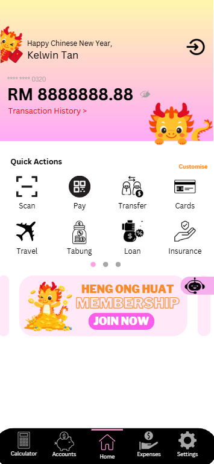
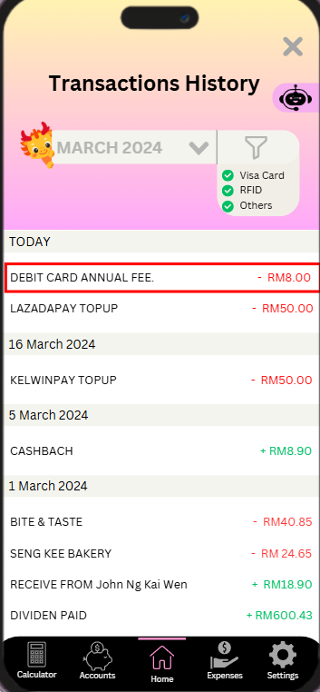
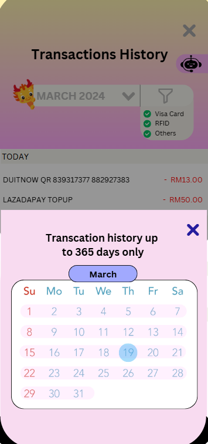
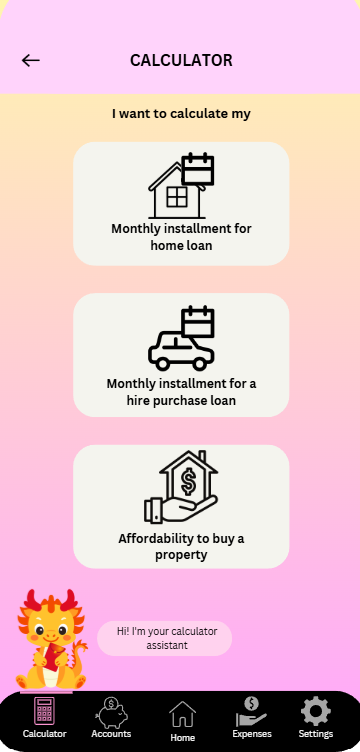
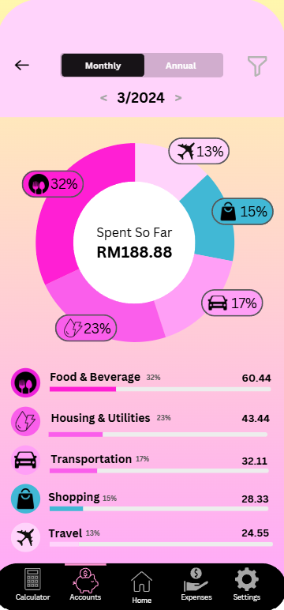
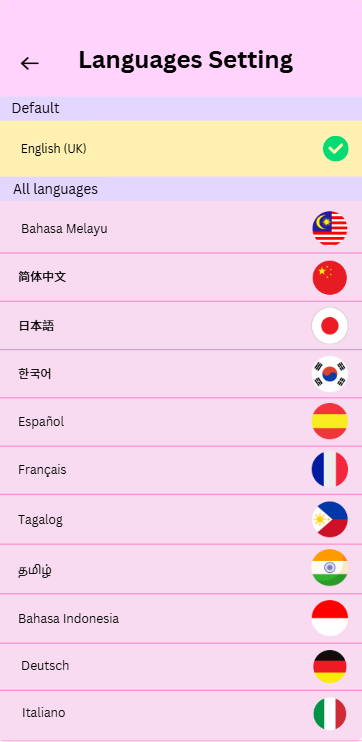
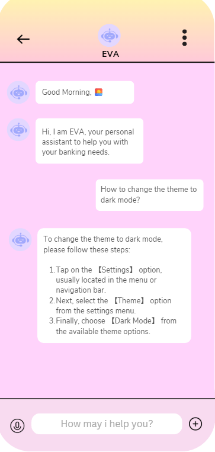
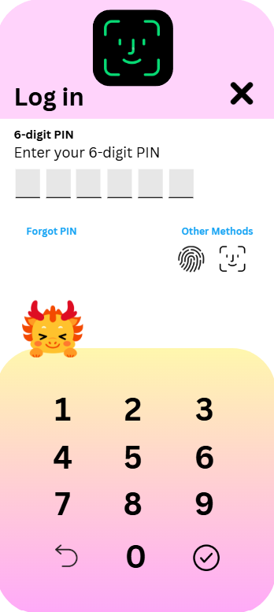
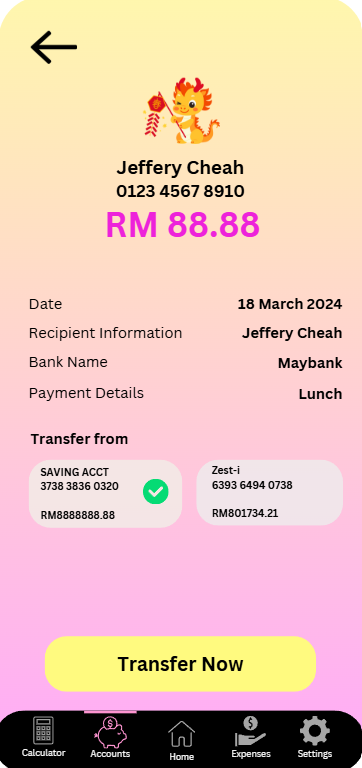

This project showcases a UI design for a banking mobile application, focused on user-centered principles and practical features. The design process involved analyzing popular banking apps to identify common strengths and usability issues. Insights from this analysis guided improvements to the user experience, aiming to remove pain points and introduce innovative elements. The result is a modern and intuitive interface that balances functionality with visual appeal.
View Full Slide







